Air Squats
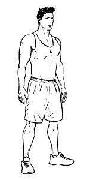
1) Place your feet at shoulder width apart while keeping your chest up and your abdominals braced.
2) Begin the movement by swinging your arms up towards your shoulders. At the same time, bend at the knees and drive your hips back like you’re sitting in a chair.
3) Once your upper thighs are parallel with the ground, pause, then drive your hips forward to return to the starting position.
Alternate Body Weight Squats
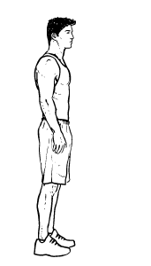
1) Stand with your feet hip width apart. Your toes should be pointing straight ahead or only slightly outward.
2) Cross your arms in front of your body, place your hands behind your head (prisoner squat) or at the sides of your head.
3) Keep your weight on your heels and bend your knees while lowering your hips towards the ground as if you are sitting down on a chair.
4) Keep your back straight at all times.
5) Continue until you feel a slight stretch in your quadriceps. Pause for a count of one. Do not let your knees extend out beyond the level of your toes.
6) Return to the start position by pushing down through your heels and extending your hips forward until you are standing straight. Repeat.
Alternate Cursty Lunges
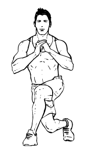
1) Standing with a braced core and flat back, bring your hands together at chest height. Position your feet to be at hip-width.
2) Beginning with the right foot, step backward and across your left foot. Simultaneously, bend the left knee and drop it towards the ground.
3) Stop when the front right knee is parallel with the ground. Push off the ground with your right foot and return to the starting position.
Alternate Heel Touchers
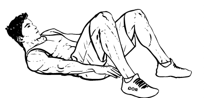
1) Lie on an exercise mat, with your back flat, knees bent and your feet flat on the floor slightly wider than shoulder-width apart.
2) Fully extend your arms down the side of your body, palms facing in. This is the start position.
3) Exhaling, crunch your torso forward and to the right until you can touch your right heel with your right hand. Hold for a count of one.
4) Return to the starting position smooth motion, inhaling as you do so.
5) Repeat the movement, this time to your left side.
6) When you have completed the movement on both sides, you have done one repetition.
7) Repeat.
Bear Crawls
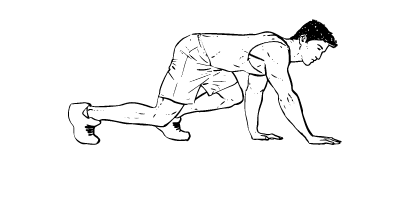
1) Come to the ground, placing your knees below your hips and your hands below your shoulders. Elevate your hips up, extending your legs and arms. Keep the head in a neutral position.
2) Move the right hand forward as you simultaneously move the left foot forward. Afterwards, move the left hand and right foot forward.
3) Continue in this back and forth pattern, always moving the opposite hand and foot. Remember to brace the core throughout the movement.
Bench Flutter Kicks
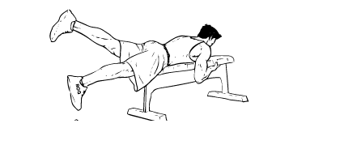
1) Lie face down on a flat bench with your hips on the edge of the bench. Fully extend your legs and raise your feet up from the floor so that they are in line with your body.
2) Place your arms on top of the bench, using them to hold on to the front edge of the bench for stability.
3) Squeeze your glutes and hamstrings and straighten your legs until they are level with your hips. This is the start position.
4) Start the exercise by raising you left leg higher than your right leg.
5) Then lower the left leg as you lift the right leg and so on.
6) Alternate in this manner until you have done all repetitions for each leg.
Bench Hops
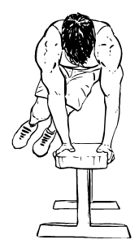
1) Place your hands on the edges of a stable box or bench. Bend at the waist and keep your core tight. Keeping your gaze towards the bench, put a slight bend in your knees.
2) Explosively jump, launching your body to the opposite side of the bench. Land on both feet and check your form. Again, make sure your core is braced.
3) Repeat the movement, gaining speed as you advance.
Bench Tricep Dips
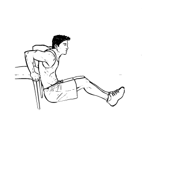
1) Sit on a chair with your hands either next to your hips or slightly under the hips.
2) Lift up onto your hands and bring your hips forward.
3) Bend your elbows and lower your hips down, keeping shoulders down and hips close to the chair.
4) Push back up but don’t lock your elbows and repeat.
Bicycles
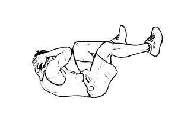
1) Lie flat on an exercise mat on the floor keeping your lower back straight with no arching of your spine and with your knees bent and feet flat on the floor.
2) Place your hands lightly on the sides of your head.
3) Curl your torso upwards so your shoulders are slightly raised off the floor.
4) Raise your knees until your thighs are at a right angle to the floor and your calves are parallel to the floor. This is the start position.
5) Slowly move your legs in a pedalling action as if you are riding a bicycle.
6) As you do so, exhale and bring your opposing elbow close to each knee by crunching to one side. Left elbow to right knee. Right elbow to left knee.
7) After each crunch, return to the start position inhaling as you do so.
8) Without pausing, repeat the movement to the other side.
9) Repeat without pausing for the desired number of repetitions to each side.
Bodyweight Calf Raises
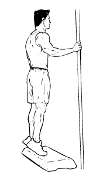
1) Stand straight with a tight core and flat back.
2) Keep your hands at your sides or hold on to a wall for balance.
3) Bring your feet to be hip distance apart.
4) Focusing the tension in your calf muscles, slowly raise yourself up on to the balls of your feet.
5) Pause at the top of the movement and slowly return to the starting position.
Bodyweight Shoulder Press-ups
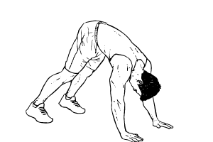
1) From a push-up position push your glutes upwards and walk your feet in so that you are in a downward-dog pose.
2) The shape of your body should look like a triangle from the side.
3) Lower your shoulders towards the ground by bending your elbows.
4) Allow your forehead to very lightly make contact with the ground before pushing upwards and away back into the starting position.
Bodyweight Sumo Squats
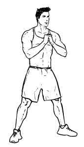
1) Stand with your feet in a wide stance, with your toes slightly pointed outwards - like a sumo wrestler. Hold your hands together in front of your chest.
2) Keeping your back straight, lower your body towards the ground by bending your knees.
3) As you reach a fully squatting position (legs are bent at a 90-degree angle), hold the pose for 1 second before driving your feet into the floor and slowly push your body back up to the starting position.
4) For a bonus, tense your glutes at the top of the movement.
Butt Kicks
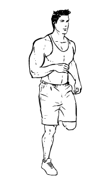
1) Standing tall with a tight core and flat back, you will begin the dynamic stretching exercise as if you were running in place. Keep the knees slightly bent at all times.Start slowly and work up to a faster speed.
2) Bring your left foot back and all the way up to the glutes. Return your left foot to the ground and repeat on the other side.
3) Continue this back and forth motion, keeping your arms swinging in motion.
Crab Toe Touches
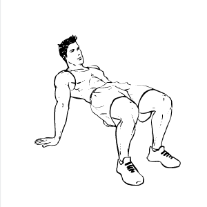
1) Sit on the floor with your feet in front of you and hands behind you. Your fingers can be pointed towards the side or behind you. With your feet on the floor, lift
3) Slowly return to the elevated posityour hips skyward. Pause when your body is parallel with the floor.
2) Focusing on contracting the core first, bring your right hand up while simultaneously lifting your left leg up. Touch your right hand to your left toes.ion and switch sides. Bring your left hand to your right toes. Keep alternating back and forth.
Crab Walks
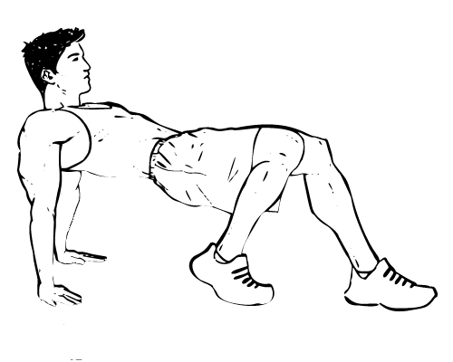
1) Sit on the ground with your knees bent, feet flat on the ground and your hands behind you. Your hands should be facing forward towards you.
2) Begin the movement by lifting your hips into the air and bracing your abdominals. Your hips must stay up throughout the movement. Walk forward by moving your right foot and right hand forward. Switch to the left side.
3) Continue this back and forth pattern while keeping your hips elevated. When finished, lower yourself to the ground.
Cross Body Mountian Climber
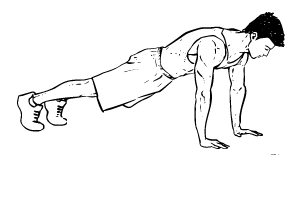
1) Assume a push-up position. Core is tight. Back is flat. Hands are underneath the shoulders. Head is in neutral position.
2) Bring one knee up towards your chest and twist towards the opposing elbow. (Ex: Right knee to left elbow.
3) Contract the core and return the leg to the starting position.
4) Alternate between legs.
Lateral Lunges
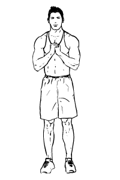
1) Stand tall with a tight core and make sure your feet are shoulder-width apart. Bring your hands together for balance.
2) Step directly to the left, leaving your right foot in place. Bend the left knee and pause once the upper left thigh is parallel to the ground. Your right leg should be completely straight.
3) Contract the hamstring muscle then push off the ground to return to the starting position. Repeat on the right side. Alternate this movement.
Twisting Jump Squats
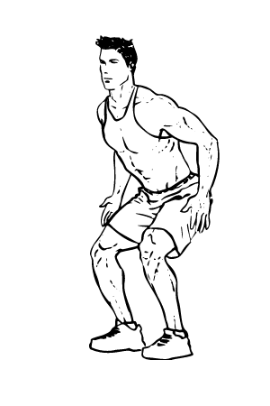
1) Begin standing tall with a tight core. Your chest will be up and your gaze will be straight ahead. Bend at the knees and drive your hips back as you lower yourself into a squat position.
2) Launch yourself up while simultaneously twisting to the other side. Your body will perform a 180 degree turn in midair.
3) Land with bent knees and immediately go right into another jump squat, turning to the starting position. Repeat this alternating pattern.